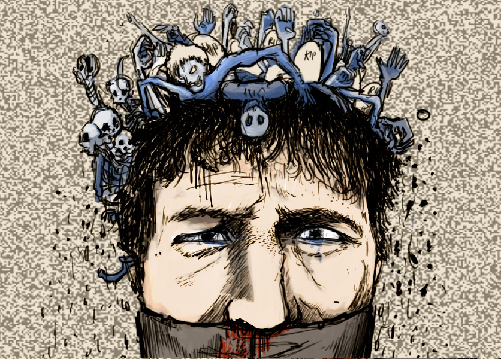

Un podcast en el cual podrás escuchar y vivir mas vividamente las conversaciones entre todos los personajes de la saga, teniendo en cuenta varios minimos detalles en cuanto a la voz y entonación que te van a poner los pelos de punta...
Click para escuchar el audio

Click para escuchar el audio